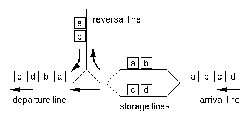

Home Page
F.A.Qs
Statistical Charts
Past Contests
Scheduled Contests
Award Contest
| Online Judge | Problem Set | Authors | Online Contests | User | ||||||
|---|---|---|---|---|---|---|---|---|---|---|
| Web Board Home Page F.A.Qs Statistical Charts | Current Contest Past Contests Scheduled Contests Award Contest | |||||||||
|
Language: Organize Your Train part II
Description RJ Freight, a Japanese railroad company for freight operations has recently constructed exchange lines at Hazawa, Yokohama. The layout of the lines is shown in Figure 1.  A freight train consists of 2 to 72 freight cars. There are 26 types of freight cars, which are denoted by 26 lowercase letters from "a" to "z". The cars of the same type are indistinguishable from each other, and each car's direction doesn't matter either. Thus, a string of lowercase letters of length 2 to 72 is sufficient to completely express the configuration of a train. Upon arrival at the exchange lines, a train is divided into two sub-trains at an arbitrary position (prior to entering the storage lines). Each of the sub-trains may have its direction reversed (using the reversal line). Finally, the two sub-trains are connected in either order to form the final configuration. Note that the reversal operation is optional for each of the sub-trains. For example, if the arrival configuration is "abcd", the train is split into two sub-trains of either 3:1, 2:2 or 1:3 cars. For each of the splitting, possible final configurations are as follows ("+" indicates final concatenation position): [3:1] Excluding duplicates, 12 distinct configurations are possible. Given an arrival configuration, answer the number of distinct configurations which can be constructed using the exchange lines described above. Input The entire input looks like the following.
Each dataset represents an arriving train, and is a string of 2 to 72 lowercase letters in an input line. Output For each dataset, output the number of possible train configurations in a line. No other characters should appear in the output. Sample Input 4 aa abba abcd abcde Sample Output 1 6 12 18 Source |
[Submit] [Go Back] [Status] [Discuss]
All Rights Reserved 2003-2013 Ying Fuchen,Xu Pengcheng,Xie Di
Any problem, Please Contact Administrator